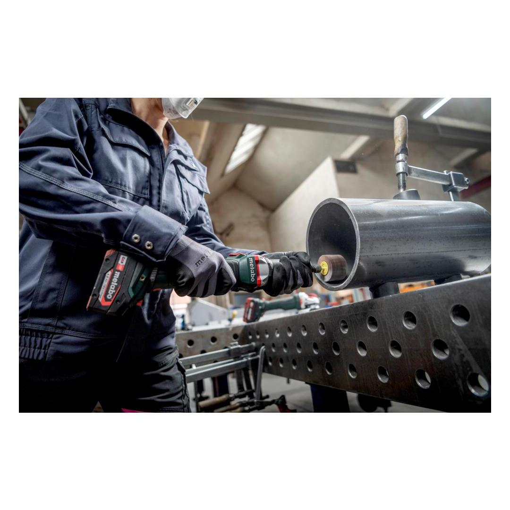
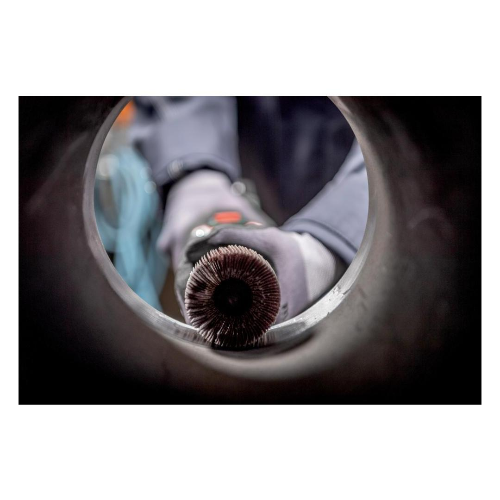
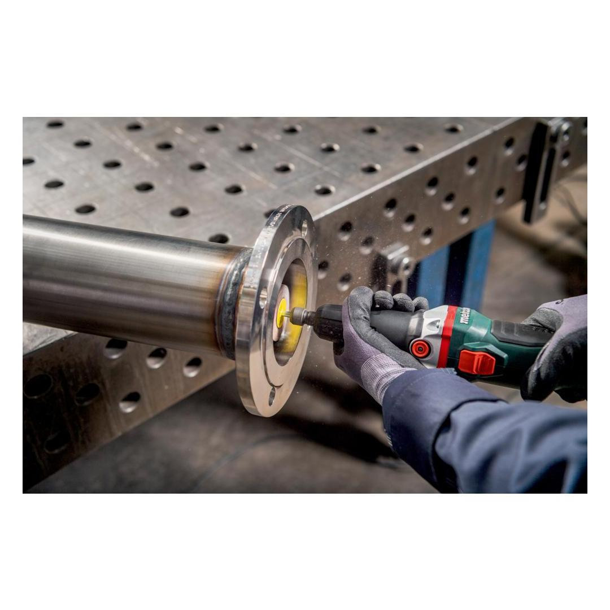
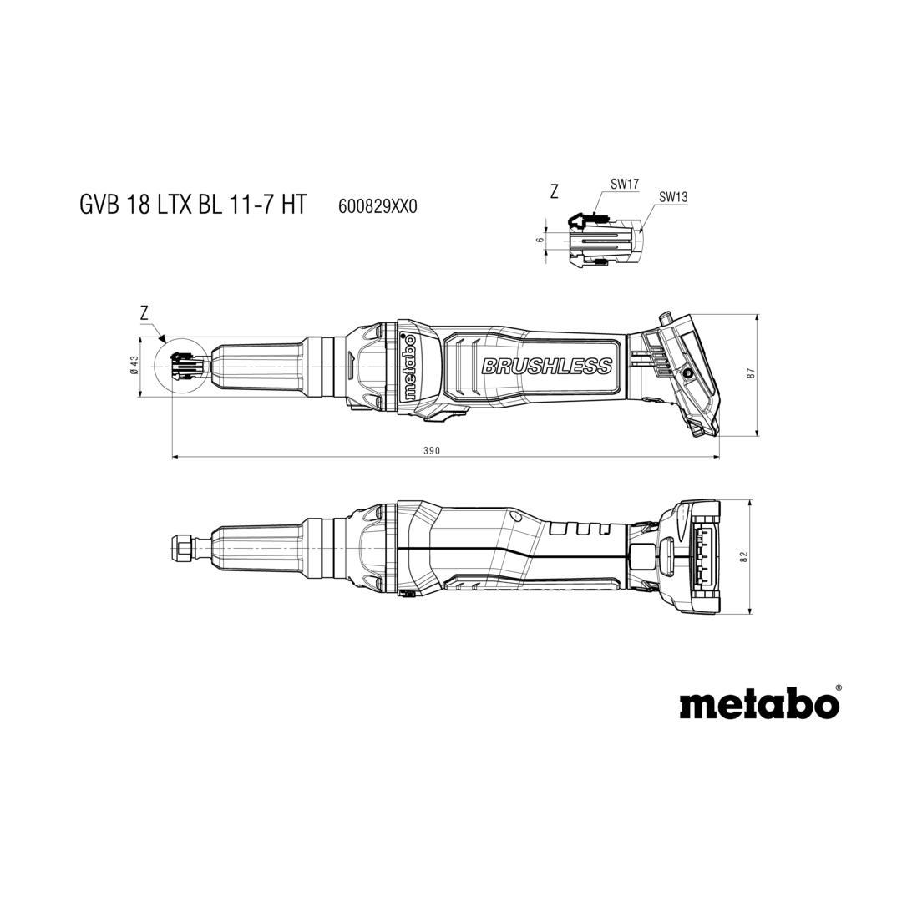
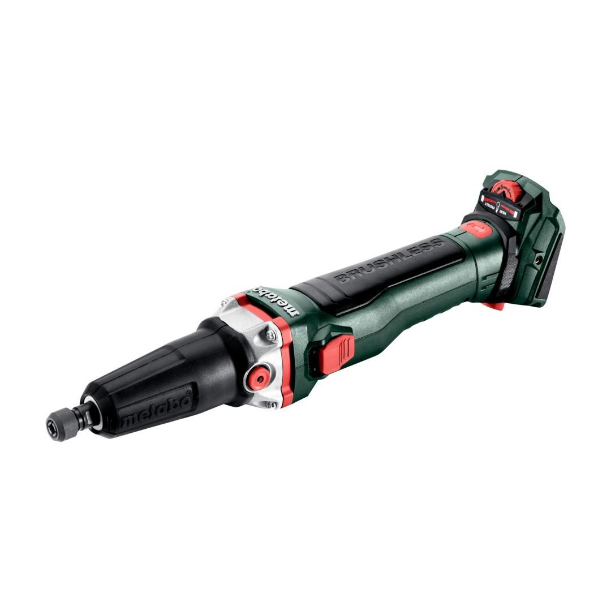

Metabo | Long Neck1500 - 7000 rpm
600829850





| Battery voltage | 18 V |
| No-load speed | 1500 - 7000 rpm |
| Collet chuck bore | 6 mm / 0.2362 " |
Product Description
- Powerful cordless die grinder with long grinding spindle also for demanding grinding applications, also in hard-to-reach places
- High torque also with low speeds, therefore ideal for working with flap grinding wheels
- Variable speed setting for working with different materials
- Particularly slim handle area for optimum handling and low-fatigue working
- Spindle lock for simple change of tools
- High degree of user safety thanks to fast brake for quick stop of the tool being used ( 1 sec)
- Powerful like a 1,100 Watt mains-powered tool thanks to efficient, service-free Brushless motor
- Electronic overload protection, soft start and restart protection
- Rubber cap for comfortable and safe working
- Battery pack can be rotated in 90°steps for best ergonomics in any working position
- Easy-to-clean dust protection filter protects motor from coarse particles
- Many brands, one battery pack system: This product can be combined with all 18V battery packs and chargers of the CAS brands: www.cordless-alliance-systems.com
Product Highlights
Brushless Motor
Unique Metabo brushless motor for quick work progress and highest efficiency for any application
Restart protection
prevents unintentional start-up after power supply interruption
Spindle lock for simple change of tools
Spindle lock for simple change of tools
Electronic safety shutdown of the motor for safe working in case the tool stops unexpectedly
Electronic safety shutdown of the motor for safe working in case the tool stops unexpectedly
Electronic soft start
for smooth start-up
Vario Tacho Constamatic (VTC) Full-wave Electronics with Thumbwheel
for working at customised speeds to suit the application material and speeds that remain almost constant, even under load
Fast Break
fast brake for increased safety with fast stopping of the tool used.
Technical Details
KEY FIGURES| Battery voltage | 18 V |
| No-load speed | 1500 - 7000 rpm |
| Collar diameter | 43 mm / 1 11/16 " |
| Collet chuck bore | 6 mm / 0.2362 " |
| Weight without battery pack | 1.5 kg / 3.3 lbs |
| Weight with battery pack | 2.2 kg / 4.9 lbs |
VIBRATION| Grinding with a mounted point | 4.6 m/s² |
| Uncertainty of measurement K | 1.5 m/s² |
| Surface grinding (up to Ø 25 mm) | 1.3 m/s² |
| Uncertainty of measurement K | 1.5 m/s² |
| Surface grinding (up to Ø 50 mm) | 2.6 m/s² |
| Uncertainty of measurement K | 1.5 m/s² |
NOISE EMISSION| Sound pressure level | 88 dB(A) |
| Sound power level (LwA) | 96 dB(A) |
| Uncertainty of measurement K | 3 dB(A) |
Scope of delivery
| Collet 6 mm |
| Protective rubber cap |
| Dust Protection Filter |
| Open-jawed spanner |
| without battery pack, without charger |